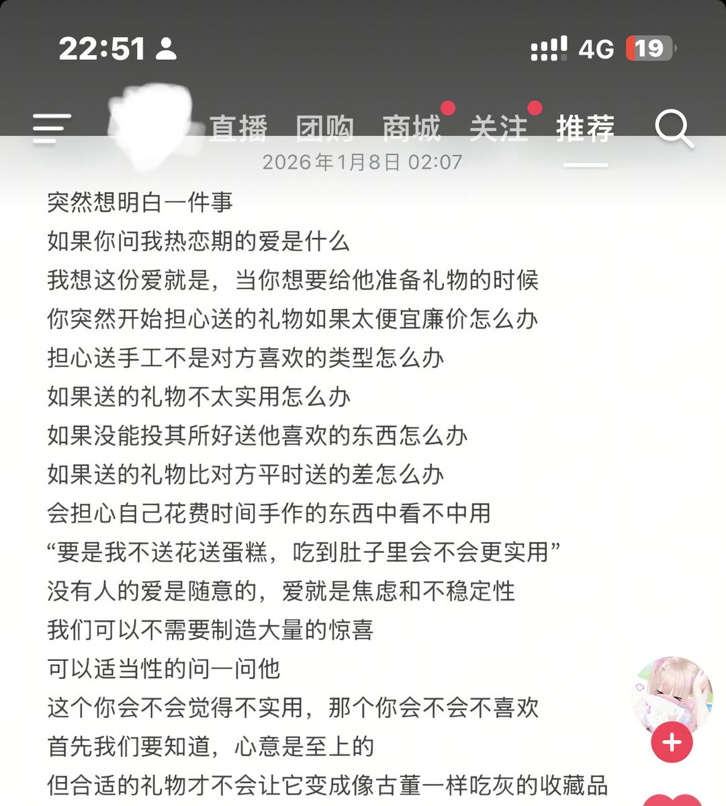

COPYww
@copymellowclip
我也是这个感觉、、完全记不住生日挑礼物也很麻烦，对方送来的礼物用不太上也觉得好浪费、双方都直接转账吧（）

小草莓
@Loveyanouo
我真的不会挑礼物啊好烦啊 我一想到谈恋爱要送礼我就要b溃了。（不是不想花钱的意思）只是很怕送的东西对方不喜欢 我更喜欢直接问对方想要啥但是感觉对方肯定会说送啥他都喜欢。🥲🥲🥲 https://t.co/lfDQrLnqtz